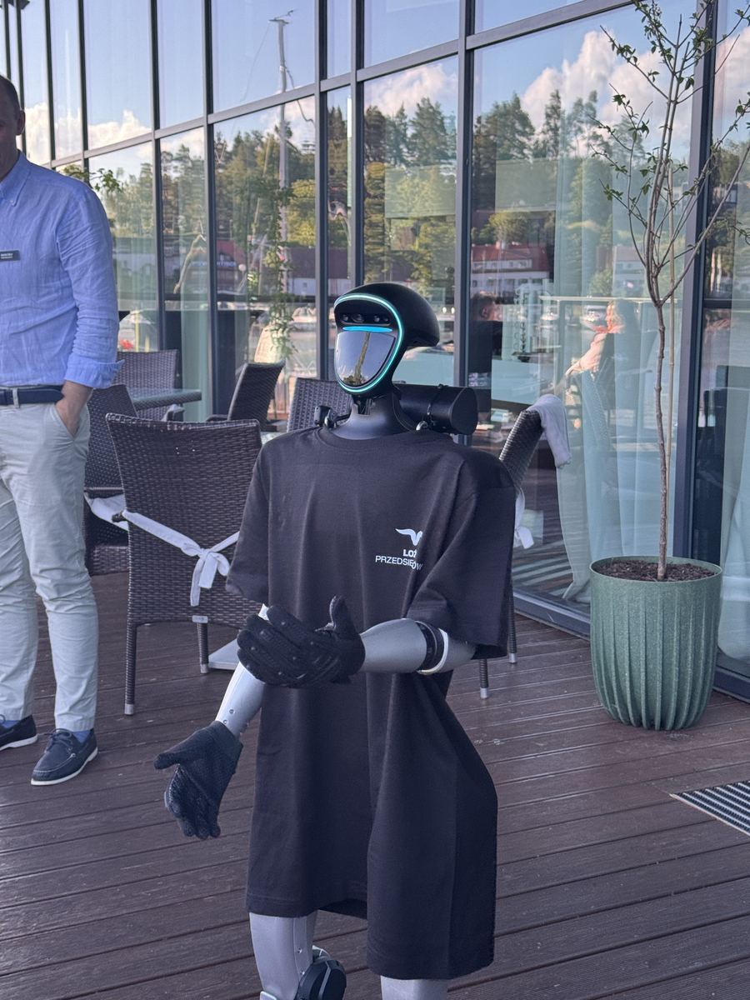
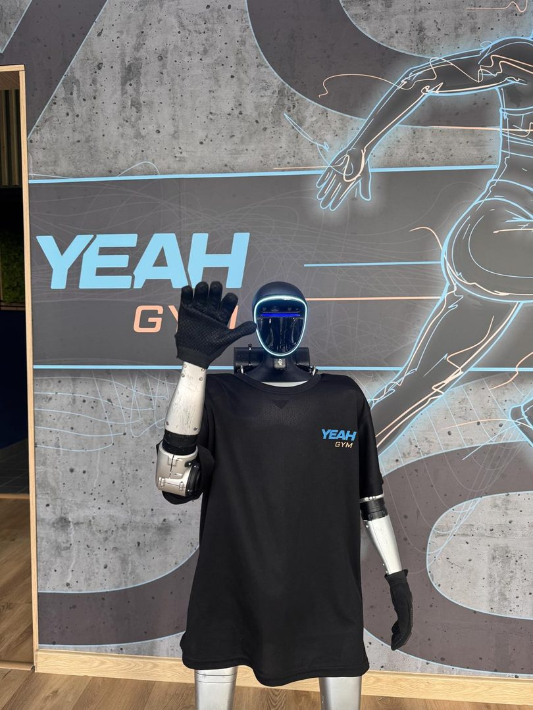
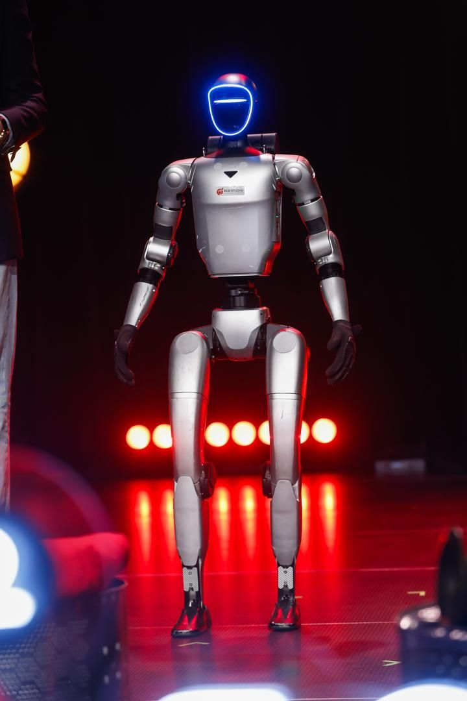

- Strona główna
- Blog
- Atrakcje na imprezę firmową
Przewodnik eventowy · Firmy
Atrakcje na imprezę firmową: 25 pomysłów, ceny i budżet na 50, 100 i 200 osób
Jakie atrakcje na imprezę firmową wybrać, żeby pracownicy nie stali pod ścianą, a zarząd nie pytał, za co zapłacił? 25 pomysłów do sali i w plener, ceny z publicznych cenników, przykładowy budżet i pięć błędów, które widzieliśmy na kilkudziesięciu eventach.

Impreza firmowa ma jeden cel, który rzadko zapisuje się w briefie: ludzie mają po niej mówić „było fajnie”, a nie „było jedzenie”. Atrakcje są narzędziem do tego celu — pod warunkiem, że pasują do liczby gości, miejsca i godziny. Ten poradnik zbiera 25 pomysłów na atrakcje na imprezę firmową, ceny z publicznych cenników (stan: październik 2026) i sposób na ułożenie z nich budżetu.
Jeśli szukasz samego scenariusza wieczoru — tematu, harmonogramu, miejsca — przejdź do poradnika pomysły na imprezę firmową. Tutaj skupiamy się na tym, co dzieje się na sali.
Jak dobrać atrakcje do imprezy firmowej
Cztery pytania, które zadajemy klientom, zanim cokolwiek zaproponujemy:
- Integracja czy marketing? Impreza dla pracowników ma zbliżyć ludzi, więc wygrywają atrakcje, w których bierze się udział. Impreza z klientami i partnerami ma zostawić wrażenie o firmie, więc liczy się nowość, marka i materiał do social mediów.
- Ile osób? Przy 30–50 osobach każdy skorzysta z każdej atrakcji. Przy 200 osobach atrakcje „jedna osoba naraz” obsłużą ułamek gości, a reszta stoi w kolejce albo odpuszcza.
- Sala czy plener? W sali odpadają ogień i dmuchańce, w plenerze dochodzą prąd, podłoże i pogoda. Restauracja z jedną salą to inny program niż hala albo ogród hotelu.
- Ile godzin? Wieczór 18:00–01:00 potrzebuje jednej atrakcji „w tle” przez cały czas, jednego mocnego punktu i muzyki. Popołudniowa integracja 14:00–18:00 potrzebuje raczej dwóch–trzech bloków aktywności niż pokazu.
Atrakcje na imprezę firmową w sali
Dwanaście pomysłów, które działają w restauracji, hotelu i hali, uporządkowanych od tych, do których goście wracają przez cały wieczór, po punkty programu.
- Fotobudka 360 albo klasyczna. Pracuje przez cały wieczór, nie potrzebuje prowadzącego, zostawia materiał. Fotobudka 360: 1 100–1 400 zł za 2 godziny, 1 500–1 900 zł za 3 godziny (cenauslug.pl, 2026). Klasyczna z wydrukiem: 600–900 zł za 2 godziny według starszych danych kb.pl (2023). Ramka z logo firmy kosztuje zwykle niewiele więcej.
- Mobilne kasyno. Ruletka, blackjack, poker na żetony bez pieniędzy, z krupierami. 1 400–2 500 zł za 3–5 godzin (cenauslug.pl, 2026). Zajmuje tych, którzy nie tańczą — czyli na imprezie firmowej zwykle większość.
- Iluzjonista close-up. Chodzi między stolikami w trakcie kolacji, pokazuje sztuczki z odległości metra. Średnio 3 727 zł za pokaz na imprezie firmowej, widełki 1 600–4 666 zł (cenauslug.pl, 2026). Na mniejszej imprezie lepszy niż pokaz sceniczny, bo dociera do każdego.
- Barman show. Pokaz flair przy otwartym barze: 2 000–8 000 zł za 2–8 godzin, sam barman mobilny średnio 1 806 zł (cenauslug.pl, 2026). Dobrze łączy się z powitaniem gości drinkiem.
- Quiz firmowy z prowadzącym. Drużyny przy stolikach, pytania o firmę i branżę, nagrody. Koszt to głównie prowadzący i nagłośnienie; pytania może przygotować zespół. Najlepsza atrakcja za najmniejsze pieniądze, jeśli ktoś umie prowadzić.
- Warsztat koktajlowy, czekoladowy lub perfumeryjny. Grupy po 10–20 osób, kilka tur po 30–40 minut. Zamiast pokazu daje „coś do zrobienia”, co dla wielu pracowników jest przyjemniejsze niż patrzenie.
- Karykaturzysta. Kilka minut na osobę, pamiątka do domu. Przy 100 gościach zatrudnij dwóch, inaczej po dwóch godzinach obsłuży połowę chętnych.
- Strefa gier. Piłkarzyki, cymbergaj, automaty retro, konsola na dużym ekranie w osobnym pomieszczeniu. Wynajem na wieczór jest tani w porównaniu z artystą, a strefa pracuje do końca imprezy.
- Stand-up albo kabaret. 30–45 minut wspólnego śmiechu po kolacji. Wybieraj po nagraniach i powiedz wykonawcy, kto siedzi na sali — żart o zarządzie bawi, gdy zarząd się śmieje.
- Saksofon albo wokalistka do DJ-a. Instrument na żywo nad muzyką z konsoli rozkręca parkiet szybciej niż sam DJ, za ułamek ceny zespołu.
- Pokaz choreografii i robot wśród gości. Robot humanoidalny otwiera parkiet kilkuminutowym układem, a potem krąży po sali: wita, rozmawia, pozuje do zdjęć, podaje rękę. Dla większości gości to pierwszy humanoid widziany na żywo. Więcej w sekcji o robocie poniżej.
- Teleturniej „firmowy”. Format znany z telewizji z pytaniami o Waszą firmę, z prowadzącym i ekranem. Droższy niż quiz, ale ogląda go cała sala, nie tylko drużyny.


Atrakcje na piknik i imprezę firmową w plenerze
Plener zmienia zasady: atrakcje muszą działać dla rodzin, przy wietrze i bez ciszy. Siedem pomysłów, które sprawdzają się na pikniku firmowym i letniej imprezie w ogrodzie.
- Dmuchańce i tor przeszkód. Zajmują dzieci pracowników na cały dzień. Prosty dmuchaniec to w ogłoszeniach od około 150 zł za dzień, zestaw ze zjeżdżalnią 400–550 zł (OLX, 2026); dolicz obsługę i prąd.
- Strefa sportowa dla dorosłych. Bumper ball, łucznictwo, gry wielkoformatowe, turniej działów. Rywalizacja między zespołami robi więcej dla integracji niż niejeden warsztat.
- Food trucki i live cooking. Jedzenie, które powstaje na oczach gości, jest atrakcją. Ustal w umowie model rozliczenia: ryczałt za porcje, stawka godzinowa albo opłata za przyjazd z gwarancją obrotu.
- Animatorzy dla dzieci. Średnio 900 zł za 3–4 godziny, powyżej 10–12 dzieci drugi animator (cenauslug.pl, 2026). Dla rodziców to warunek, żeby w ogóle porozmawiać z kimś z firmy.
- Byk rodeo albo symulator. Jedna osoba naraz, ale reszta ogląda i dopinguje — kolejka jest częścią atrakcji.
- Scena z konkursami i koncertem. Punkty programu co godzinę trzymają ludzi na terenie imprezy. Konkursy może prowadzić ktoś z firmy albo konferansjer.
- Pokaz ognia lub laserowy na finał. Po zmroku, jako sygnał „to był dobry dzień”. Ogień wymaga zgody obiektu i strefy bezpieczeństwa; lasery działają też tam, gdzie ogień jest zakazany. Szczegóły w poradniku pokazy na event.
Atrakcje na wigilię firmową, galę i integrację
Ta sama firma, różne okazje — i różne atrakcje. Sześć wskazówek na najczęstsze z nich:
- Wigilia firmowa: warsztat pierników lub wieńców, koncert kolęd, loteria, podsumowanie roku z nagrodami, robot humanoidalny w czapce Mikołaja rozdający upominki. Cały program w poradniku wigilia firmowa.
- Gala i jubileusz: czerwony dywan, ścianka, fontanny iskier na wejście, konferansjer, występ artystyczny, kasyno po części oficjalnej.
- Integracja firmowa: gra terenowa, warsztaty w grupach, turniej, wspólne gotowanie. Lista 30 pomysłów: integracja firmowa.
- Otwarcie biura lub oddziału: atrakcja przy wejściu, która zatrzymuje przechodniów i zaproszonych — robot humanoidalny pracował tak przed salonem samochodowym i przy stoisku dewelopera.
- Impreza z klientami: mniej zabaw, więcej rozmów: barman show, iluzjonista close-up, robot jako temat do rozmowy przy stoliku.
- Impreza dla dużej firmy (300+ osób): kilka stref równolegle, dwie fotobudki zamiast jednej, pokaz na scenie z ekranami, artyści chodzący między gośćmi.
Ile kosztują atrakcje na imprezę firmową
Zestawienie z publicznych cenników i ofert (serwisy agregujące wyceny wykonawców, ogłoszenia), stan październik 2026. Liczby są orientacyjne: sobota w sezonie jest droższa niż czwartek w lutym, a dojazd poza promień wykonawcy zmienia każdą wycenę.
| Atrakcja | Cena orientacyjna | Źródło |
|---|---|---|
| Fotobudka 360, 2–3 h | 1 100–1 900 zł | cenauslug.pl, 2026 |
| Fotobudka klasyczna, 2–4 h | 600–1 300 zł | kb.pl, 2023 |
| Iluzjonista na imprezie firmowej | średnio 3 727 zł | cenauslug.pl, 2026 |
| Mobilne kasyno, 3–5 h | 1 400–2 500 zł | cenauslug.pl, 2026 |
| Barman show | 2 000–8 000 zł | cenauslug.pl, 2026 |
| Animator dla dzieci, 3–4 h | 550–1 400 zł, średnio 900 zł | cenauslug.pl, 2026 |
| Dmuchaniec na dzień | od ok. 150 zł; zestaw 400–550 zł | OLX, 2026 |
| Catering, 50 osób | średnio 220 zł/os. (130–280 zł); kelner 60–100 zł/h | cenauslug.pl, 2026 |
| Catering prostszy: dwa dania ciepłe i przekąski | 80–150 zł/os.; pełny kilkugodzinny od ok. 120 zł/os. | kb.pl, 2026 |
| DJ z nagłośnieniem (cennik weselny, 100 osób) | 5 000–8 500 zł; impreza firmowa w tygodniu zwykle taniej | cenauslug.pl, 2026 |
| Robot humanoidalny 33bots | od 5 500 zł netto za pełny dzień; krótsze wejście taniej | nasz cennik |
Budżet na imprezę firmową: 50, 100 i 200 osób
Przykładowy budżet dla wieczoru w wynajętej sali, zbudowany z liczb z tabeli powyżej. Pozycje bez publicznego cennika (sala, DJ na imprezę firmową, dekoracje) oznaczamy jako „do wyceny” — nie zgadujemy.
| Pozycja | 50 osób | 100 osób | 200 osób |
|---|---|---|---|
| Catering, 220 zł/os. | 11 000 zł | 22 000 zł | 44 000 zł |
| Obsługa kelnerska, 6 h po 80 zł/h | 2 kelnerów: 960 zł | 4 kelnerów: 1 920 zł | 8 kelnerów: 3 840 zł |
| Atrakcja „w tle”: fotobudka 360, 3 h | 1 500–1 900 zł | 1 500–1 900 zł | 2 fotobudki: 3 000–3 800 zł |
| Mocny punkt: iluzjonista lub barman show | ok. 2 000–3 700 zł | ok. 3 700 zł | ok. 3 700–8 000 zł |
| Kasyno dla nietańczących | — | 1 400–2 500 zł | 2 500 zł |
| Robot humanoidalny (wejście lub dzień) | od 5 500 zł netto za dzień, wejście taniej | od 5 500 zł netto | od 5 500 zł netto |
| DJ, sala, dekoracje | do wyceny | do wyceny | do wyceny |
Wniosek, który zaskakuje wielu organizatorów: przy 100 osobach catering kosztuje więcej niż wszystkie atrakcje razem. Oszczędzanie na atrakcjach zmienia budżet o kilka procent, a wrażenia o sto.
Atrakcja a cel biznesowy: rozrywka czy marketing
Jeśli impreza jest dla pracowników, wybierz to, w czym bierze się udział. Jeśli jest z klientami, partnerami albo mediami, atrakcja staje się narzędziem marketingu i warto ją ocenić inaczej:
- Pierwsza reakcja. Czy goście podchodzą sami, bez zachęty? Artysta robi wrażenie, gdy gość już stoi przy scenie. Atrakcja, której nikt wcześniej nie widział, zatrzymuje ludzi z drugiego końca sali.
- Materiał do social mediów. Co sprawi, że goście sami nagrają i opublikują? Z naszych eventów wynika prosta zasada: ludzie publikują to, czego ich znajomi jeszcze nie widzieli. Zdjęcie z food truckiem jest miłe, zdjęcie z robotem humanoidalnym jest powodem do wpisu.
- Marka w kadrze. Czy logo jest częścią atrakcji (ramka fotobudki, koszulka robota, ścianka za barem), czy wisi obok?
- Pretekst do rozmowy. Na imprezie z klientami atrakcja ma dać handlowcowi naturalny powód, żeby podejść. Robot przy ściance albo barman przy stoliku dają go lepiej niż DJ.
Pełne porównanie dziesięciu atrakcji według tych kryteriów: atrakcje eventowe — robot humanoidalny i 9 innych opcji.
Robot humanoidalny na imprezie firmowej
Robot humanoidalny Unitree G1 pracuje na imprezie firmowej w trzech momentach. Przy wejściu wita gości, podaje rękę i pozuje do zdjęć w koszulce z Waszym logo. W trakcie kolacji krąży między stolikami, rozmawia po polsku lub w innym języku, odpowiada na pytania o firmę, które wgraliśmy mu wcześniej. Po kolacji otwiera parkiet układem choreograficznym i zostaje wśród gości, dopóki chcą zdjęć.
Na finale Eco Studio pracował na scenie z prowadzącymi i przy ściance sponsorów, gdzie nagrano z nim wywiad. Na gali w Dreźnie witał gości na czerwonym dywanie w cekinowym smokingu. Na spotkaniu Loży Przedsiębiorców był tematem rozmów na tarasie. Wnioski z ponad 100 wydarzeń zebraliśmy w artykule 9 lekcji z eventów z robotem.
Koszt: pełny dzień od 5 500 zł netto, krótsze wejście — na przykład dwie godziny na powitanie i pokaz — wyceniamy indywidualnie i taniej. W cenie operator, transport, branding (logo, kod QR) i ubezpieczenie OC. Bez zaliczki, faktura po wydarzeniu. Oferta i realizacje: robot na imprezę firmową.
Uczciwie
Robot nie zastąpi DJ-a i nie da każdemu wydruku do ręki. Jeśli impreza to głównie parkiet do rana, wydaj pieniądze na muzykę i fotobudkę. Jeśli ma być tematem rozmów w poniedziałek w biurze i w social mediach — robot robi to lepiej niż cokolwiek innego z tej listy.
Pięć błędów, które psują atrakcje na imprezie firmowej
- Pokaz w trakcie kolacji. Goście jedzą, obsługa chodzi, nikt nie patrzy na scenę. Pokaz planuj po głównym daniu, przed deserem albo po nim.
- Jedna atrakcja na 200 osób. Jedna fotobudka obsłuży kilkadziesiąt grup na godzinę; reszta nie zdąży. Przy dużej liczbie gości liczy się przepustowość, nie liczba pomysłów.
- Brak prowadzącego. Bez kogoś, kto zapowie pokaz i zbierze ludzi, nawet dobry wykonawca gra dla połowy sali.
- Prąd, miejsce, dojazd ustalone „jakoś to będzie”. Fotobudka potrzebuje gniazdka i 3×3 metry, kasyno stołów, robot przejścia między stolikami. Zapytaj każdego wykonawcę o wymagania techniczne na piśmie.
- Za dużo naraz. Pięć atrakcji w trzy godziny to chaos i puste stanowiska. Jedna w tle, jeden punkt programu, muzyka — i czas na rozmowy, po które ludzie przyszli.
Najczęstsze pytania
Dla małej grupy najlepiej działają atrakcje, w których wszyscy biorą udział naraz: quiz z prowadzącym, warsztat koktajlowy, iluzjonista close-up przy stołach, mobilne kasyno. Fotobudka i robot humanoidalny też się sprawdzą — przy 50 osobach każdy zdąży z nich skorzystać bez kolejki.
Według publicznych cenników z 2026 roku: fotobudka 360 1 100–1 900 zł za 2–3 godziny, iluzjonista średnio 3 727 zł, mobilne kasyno 1 400–2 500 zł, barman show 2 000–8 000 zł, catering średnio 220 zł od osoby. Robot humanoidalny 33bots: pełny dzień od 5 500 zł netto, krótsze wejście taniej, z operatorem, transportem i brandingiem w cenie.
Strefy, które działają cały dzień: dmuchańce i strefa sportowa, food trucki, animatorzy dla dzieci pracowników, fotobudka pod zadaszeniem. Na finał po zmroku pokaz ognia albo laserowy. Robot humanoidalny pracował u nas na paradzie, przed salonem samochodowym w deszczu i w ogrodzie po zmroku, więc plener nie jest dla niego problemem.
Wydatki na imprezę integracyjną dla pracowników co do zasady mogą być kosztem uzyskania przychodu, jeśli impreza ma cel integracyjny i jest udokumentowana. Inaczej traktuje się część dla kontrahentów (reprezentacja) i alkohol, które urzędy często kwestionują. Odliczenie VAT nie przysługuje od usług gastronomicznych i noclegowych. Szczegóły zawsze potwierdź z księgowym — przepisy i interpretacje się zmieniają.
Artysta (iluzjonista, stand-up, zespół) daje wspólne przeżycie całej sali w konkretnym momencie. Robot humanoidalny pracuje przez kilka godzin wśród gości: wita, rozmawia, pozuje do zdjęć, tańczy. Najlepiej działają razem — robot otwiera wieczór i krąży między stolikami, artysta robi mocny punkt programu po kolacji.